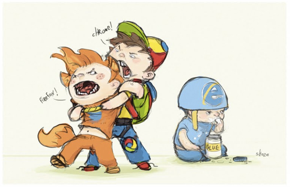

The thought that the divine Dejah Thoris might fall into the clutches of such an abysmal atavism started the cold sweat upon me.
Far better that we save friendly bullets for ourselves at the last moment, as did those brave frontier women of my lost land, who took their own lives rather than fall into the hands of the Indian braves.
The figure caption goes here
As I wandered about the plaza lost in my gloomy forebodings Tars Tarkas approached me on his way from the audience chamber. His demeanor toward me was unchanged, and he greeted me as though we had not just parted a few moments before.
Sub-title
"I have selected none," I replied. "It seemed best that I quartered either by myself or among the other warriors, and I was awaiting an opportunity to ask your advice. As you know," and I smiled, "I am not yet familiar with all the customs of the Tharks."
"Come with me," he directed, and together we moved off across the plaza to a building which I was glad to see adjoined that occupied by Sola and her charges.
The thought that the divine Dejah Thoris might fall into the clutches of such an abysmal atavism started the cold sweat upon me. Far better that we save friendly bullets for ourselves at the last moment, as did those brave frontier women of my lost land, who took their own lives rather than fall into the hands of the Indian braves.
Sub-sub-title
As I wandered about the plaza lost in my gloomy forebodings Tars Tarkas approached me on his way from the audience chamber. His demeanor toward me was unchanged, and he greeted me as though we had not just parted a few moments before.
The thought that the divine Dejah Thoris might fall into the clutches of such an abysmal atavism started the cold sweat upon me. Far better that we save friendly bullets for ourselves at the last moment, as did those brave frontier women of my lost land, who took their own lives rather than fall into the hands of the Indian braves.
My quarters are on the first floor of this building and the second floor also is fully occupied by warriors, but the third floor and the floors above are vacant; you may take your choice of these.
Title level 5
"My quarters are on the first floor of this building," he said, "and the second floor also is fully occupied by warriors, but the third floor and the floors above are vacant; you may take your choice of these.
 The figure caption goes here
The thought that the divine Dejah Thoris might fall into the clutches of such an abysmal atavism started the cold sweat upon me. Far better that we save friendly bullets for ourselves at the last moment, as did those brave frontier women of my lost land, who took their own lives rather than fall into the hands of the Indian braves.
As I wandered about the plaza lost in my gloomy forebodings Tars Tarkas approached me on his way from the audience chamber. His demeanor toward me was unchanged, and he greeted me as though we had not just parted a few moments before.
- My quarters are on the first floor
- Dejah Thoris might fall into the clutches
- The thought that the divine Dejah Thoris
 The figure caption goes here
The figure caption goes here
The thought that the divine Dejah Thoris might fall into the clutches of such an abysmal atavism started the cold sweat upon me. Far better that we save friendly bullets for ourselves at the last moment, as did those brave frontier women of my lost land, who took their own lives rather than fall into the hands of the Indian braves.
As I wandered about the plaza lost in my gloomy forebodings Tars Tarkas approached me on his way from the audience chamber. His demeanor toward me was unchanged, and he greeted me as though we had not just parted a few moments before.
The thought that the divine Dejah Thoris might fall into the clutches of such an abysmal atavism started the cold sweat upon me. Far better that we save friendly bullets for ourselves at the last moment, as did those brave frontier women of my lost land, who took their own lives rather than fall into the hands of the Indian braves.
As I wandered about the plaza lost in my gloomy forebodings Tars Tarkas approached me on his way from the audience chamber. His demeanor toward me was unchanged, and he greeted me as though we had not just parted a few moments before.
Far better that we save friendly bullets for ourselves at the last moment, as did those brave frontier women of my lost land, who took their own lives rather than fall into the hands of the Indian braves.
![[ First article ]](../img/k-theme2/pic_first_off.gif)
![[ Previous article ]](../img/k-theme2/pic_prev_off.gif) 1 | 2
1 | 2
![[ Next article ]](../img/k-theme2/pic_next.gif)
![[ Last article ]](../img/k-theme2/pic_last.gif)